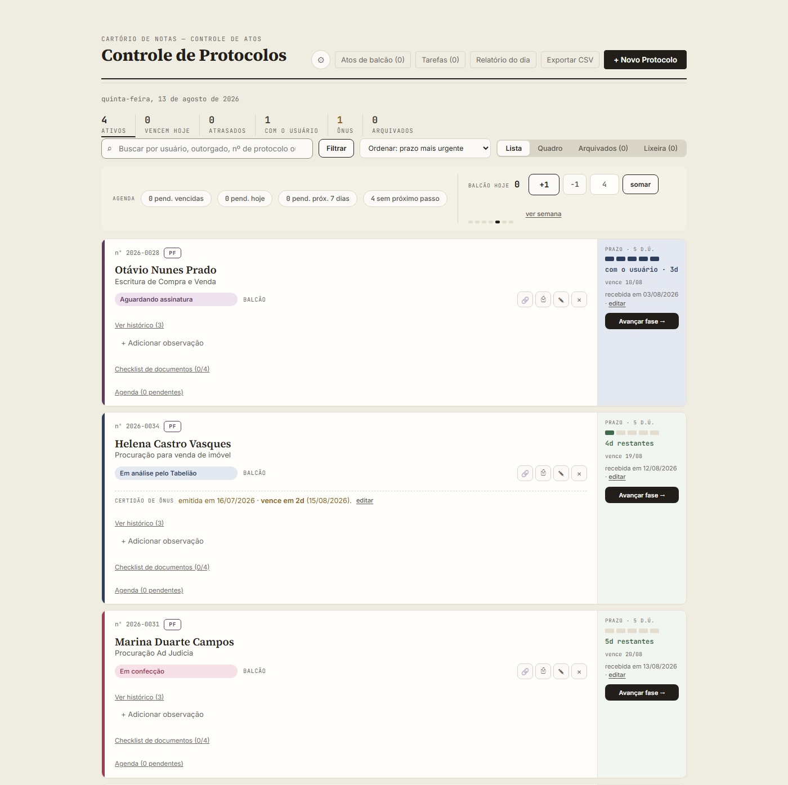

Para cartório de notas
O cliente liga perguntando da procuração dele. Quanto tempo você leva para responder?
Controle de Atos é um livro de protocolos para cartório de notas. Cada ato com prazo calculado, responsável definido e próximo passo agendado — numa tela só.
Grátis, sem instalar e sem cadastro. Abre direto no navegador.
Funciona ao lado do sistema do seu cartório. Não substitui lavratura de atos, emissão de selo, cartão de firma nem qualquer obrigação oficial da serventia. Controla o andamento do trabalho — que é onde hoje entram a planilha e o caderno.
O problema
Três perguntas que todo cartório responde mal
01
Onde está o prazo?
Planilha, caderno, papel na mesa, memória de quem está atendendo. Quando alguém falta, o prazo falta junto.
02
Quem cobra quem quando um ato atrasa?
Sem responsável registrado, a cobrança vira conversa de corredor. E quando o ato atrasa de verdade, ninguém sabe em que etapa parou.
03
O que acontece quando o cliente liga?
Alguém levanta da mesa, procura a pasta, pergunta para dois colegas e liga de volta depois. Toda vez.
A ferramenta
Feito para a rotina de procurações e escrituras
- Prazo calculado sozinho A partir da data em que a documentação ficou completa, descontando fins de semana e feriados.
- Lista e quadro A mesma informação em tabela ou em colunas de andamento, conforme a preferência de quem está olhando.
- Checklist de documentos por tipo de ato Separado entre procurações e escrituras, com a exigência própria de cada tipo.
- Agenda de pendências O próximo passo de cada protocolo, mostrando o que venceu, o que é hoje e o que vence nos próximos dias.
- Histórico por protocolo Mudança de status, observação e pendência na mesma linha do tempo, com quem fez e quando.
- Lixeira em vez de exclusão Nada sai do sistema por engano.

Sigilo
Os dados não saem do seu computador
Na versão atual, nada é enviado para nenhum servidor. Os protocolos ficam numa pasta que você escolhe, com backup automático duas vezes ao dia, ou no armazenamento do próprio navegador, com exportação manual disponível a qualquer momento.
O código é público, os dados são seus. Você pode conferir por conta própria o que a ferramenta faz — e o que ela não faz.
Piloto aberto
Onde o projeto está hoje
A versão que você pode abrir acima funciona e está em uso. A versão em nuvem — com login, vários usuários e visão do titular — está em construção.
Estou procurando dois ou três cartórios para acompanhar essa construção de perto, em uso gratuito, ajudando a decidir o que entra e o que fica de fora.
Se o seu cartório se interessa, eu gostaria de conversar.
Vamos conversar
Uma conversa de vinte minutos, presencial ou por telefone. Quero entender como o seu cartório controla prazo hoje — e mostrar o que já está pronto.